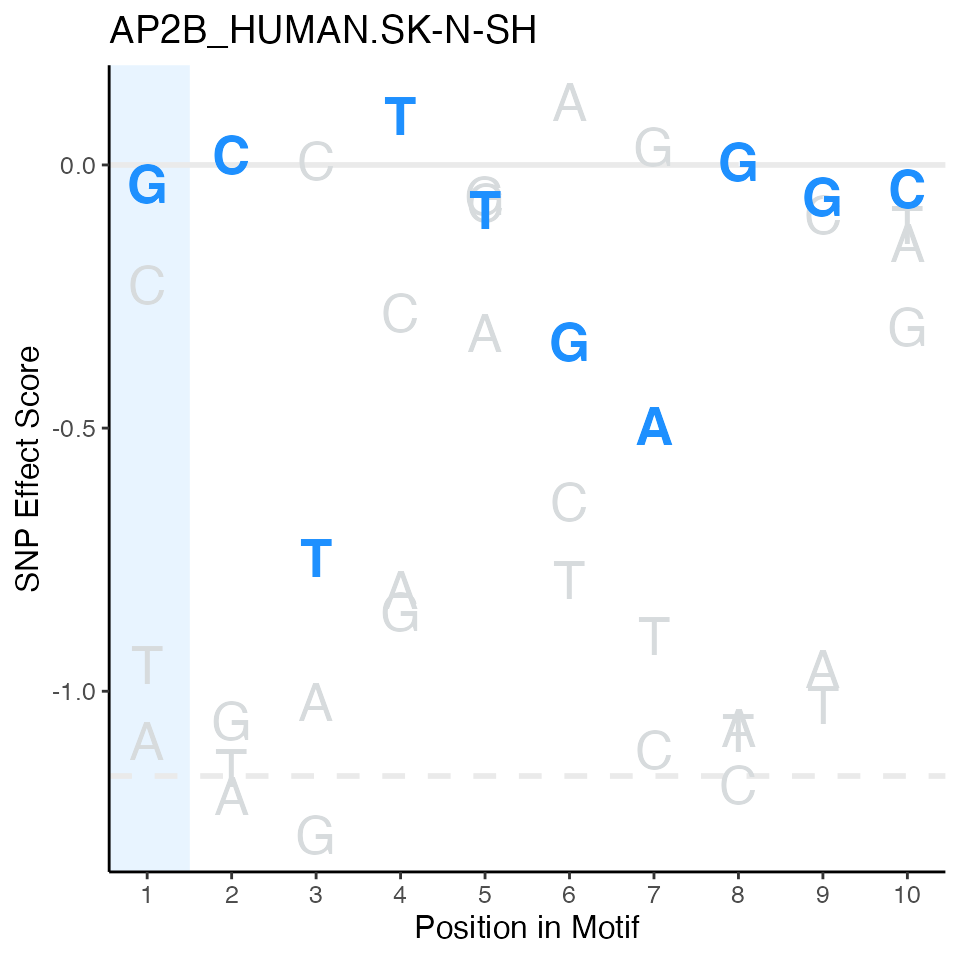

SEMplR Vignette
SEMplR.Rmd
suppressPackageStartupMessages({
library(VariantAnnotation)
library(SEMplR)
})Printing the SNPEffectMatrixCollection, we can see that
we have 223 SEMs and 13 meta data features for each.
data(sc)
sc
#> An object of class SNPEffectMatrixCollection
#> sems(223): AP2B_HUMAN.SK-N-SH, ARNT_HUMAN.GM12878 ... ZNF18_HUMAN.HEK293, ZSCAN4_secondary
#> semData(13): transcription_factor, ensembl_id, ... , PWM_source, SEM_KEYWe can access all SEMs in collection the with the function
sems() or some subset of matrices by specifying a vector of
semIds in the semId parameter.
sems(sc, semId = c("AP2B_HUMAN.SK-N-SH", "ZSCAN4_secondary"))
#> $`AP2B_HUMAN.SK-N-SH`
#> An object of class SNPEffectMatrix
#> semId: AP2B_HUMAN.SK-N-SH
#> baseline: -1.161048
#> sem:
#> A C G T
#> <num> <num> <num> <num>
#> 1: -1.093659 -0.228215 -0.035353 -0.949757
#> 2: -1.198571 0.019236 -1.057251 -1.145949
#> 3: -1.021307 0.008023 -1.273623 -0.746918
#> 4: -0.808380 -0.281746 -0.849156 0.093359
#> 5: -0.319849 -0.071797 -0.058358 -0.085237
#> 6: 0.119797 -0.640756 -0.336054 -0.787809
#> 7: -0.496324 -1.111405 0.034943 -0.894114
#> 8: -1.069881 -1.178852 0.005380 -1.079589
#> 9: -0.957910 -0.095025 -0.061232 -1.025970
#> 10: -0.147762 -0.046611 -0.308033 -0.113474
#>
#> $ZSCAN4_secondary
#> An object of class SNPEffectMatrix
#> semId: ZSCAN4_secondary
#> baseline: -2.911018
#> sem:
#> A C G T
#> <num> <num> <num> <num>
#> 1: 0.339681 -1.6258400 -0.852570 -1.40307
#> 2: -1.858890 0.2245480 -1.803160 -1.10145
#> 3: 0.259177 -1.8665800 -0.744934 -1.62341
#> 4: -2.077230 0.1970890 -1.971940 -1.21187
#> 5: 0.198878 -2.2059500 -0.760569 -1.76139
#> 6: -2.321170 0.1354730 -2.300640 -1.39237
#> 7: 0.157553 -2.4685400 -0.741112 -1.84194
#> 8: -2.482910 0.0893564 -2.406690 -1.56081
#> 9: 0.136749 -2.4335100 -0.704496 -1.94128
#> 10: -2.352060 0.1257340 -2.211630 -1.60719
#> 11: 0.187489 -2.1923800 -0.641008 -1.76197
#> 12: -2.109030 0.1677660 -1.974360 -1.51917
#> 13: 0.240220 -1.9354700 -0.655348 -1.54698
#> 14: -1.748380 0.2142480 -1.693530 -1.38530
#> 15: 0.289375 -1.6708800 -0.698449 -1.42560
#> 16: -1.483480 0.2650430 -1.541780 -1.31953We can view the SEM meta data slot with the semData
function.
semData(sc)
#> Key: <SEM_KEY>
#> transcription_factor ensembl_id ebi_complex_ac uniprot_ac
#> <char> <char> <char> <char>
#> 1: TFAP2B ENSG00000008196 Q92481
#> 2: ARNT ENSG00000143437 P27540
#> 3: ATF1 ENSG00000123268 P18846
#> 4: ATF2 ENSG00000115966 P15336
#> 5: ATF3 ENSG00000162772 P18847
#> ---
#> 219: ZBTB7A ENSG00000178951 O95365
#> 220: ZFX ENSG00000005889 P17010
#> 221: ZNF281 ENSG00000162702 Q9Y2X9
#> 222: ZNF18 ENSG00000154957 P17022
#> 223: ZSCAN4 ENSG00000180532 Q8NAM6
#> PWM_id SEM SEM_baseline cell_type
#> <char> <char> <num> <char>
#> 1: AP2B_HUMAN.H11MO.0.B AP2B_HUMAN.SK-N-SH.sem -1.1610478 SK-N-SH
#> 2: ARNT_HUMAN.H11MO.0.B ARNT_HUMAN.GM12878.sem -1.8632604 GM12878
#> 3: ATF1_HUMAN.H11MO.0.B ATF1_HUMAN.K562.sem -2.9718855 K562
#> 4: ATF2_HUMAN.H11MO.0.B ATF2_HUMAN.HepG2.sem -1.4186930 HepG2
#> 5: ATF3_HUMAN.H11MO.0.A ATF3_HUMAN.HepG2.sem -2.1588687 HepG2
#> ---
#> 219: ZBT7A_HUMAN.H11MO.0.A ZBT7A_HUMAN.HepG2.sem -0.4056000 HepG2
#> 220: ZFX_HUMAN.H11MO.0.A ZFX_HUMAN.HepG2.sem -0.2478717 HepG2
#> 221: ZN281_HUMAN.H11MO.0.A ZN281_HUMAN.HepG2.sem -0.3926150 HepG2
#> 222: ZNF18_HUMAN.H11MO.0.C ZNF18_HUMAN.HEK293.sem -1.6459529 HEK293
#> 223: Zscan4_pwm_secondary ZSCAN4_secondary.sem -2.9110180 HEK293
#> neg_log10_pval chip_ENCODE_accession dnase_ENCODE_accession PWM_source
#> <num> <char> <char> <char>
#> 1: 6.476702 ENCFF303ORH ENCFF752OZB HOCOMOCOv11
#> 2: 12.081160 ENCFF538DNI ENCFF759OLD HOCOMOCOv11
#> 3: 56.056680 ENCFF885JPB ENCFF274YGF HOCOMOCOv11
#> 4: 27.821210 ENCFF899JAX ENCFF897NME HOCOMOCOv11
#> 5: 14.618530 ENCFF197JBM ENCFF897NME HOCOMOCOv11
#> ---
#> 219: 3.684286 ENCFF439DRT ENCFF897NME HOCOMOCOv11
#> 220: 3.443155 ENCFF329DCV ENCFF897NME HOCOMOCOv11
#> 221: 3.428189 ENCFF948PYK ENCFF897NME HOCOMOCOv11
#> 222: 3.793244 ENCFF888BHA ENCFF285OXK HOCOMOCOv11
#> 223: 11.973690 ENCFF485WHZ ENCFF910QHN UNIPROBE
#> SEM_KEY
#> <char>
#> 1: AP2B_HUMAN.SK-N-SH
#> 2: ARNT_HUMAN.GM12878
#> 3: ATF1_HUMAN.K562
#> 4: ATF2_HUMAN.HepG2
#> 5: ATF3_HUMAN.HepG2
#> ---
#> 219: ZBT7A_HUMAN.HepG2
#> 220: ZFX_HUMAN.HepG2
#> 221: ZN281_HUMAN.HepG2
#> 222: ZNF18_HUMAN.HEK293
#> 223: ZSCAN4_secondaryBuild Variant Set
We will load the variants we want to score as a VRanges
object.
vr <- VRanges(seqnames = c("chr12", "chr19"),
ranges = c(94136009, 10640062),
ref = c("G", "T"), alt = c("C", "A"))
vr
#> VRanges object with 2 ranges and 0 metadata columns:
#> seqnames ranges strand ref alt totalDepth
#> <Rle> <IRanges> <Rle> <character> <characterOrRle> <integerOrRle>
#> [1] chr12 94136009 * G C <NA>
#> [2] chr19 10640062 * T A <NA>
#> refDepth altDepth sampleNames softFilterMatrix
#> <integerOrRle> <integerOrRle> <factorOrRle> <matrix>
#> [1] <NA> <NA> <NA>
#> [2] <NA> <NA> <NA>
#> -------
#> seqinfo: 2 sequences from an unspecified genome; no seqlengths
#> hardFilters: NULLScore Variants
sempl_obj <- scoreVariants(vr = vr,
semList = sc,
bs_genome_obj=BSgenome.Hsapiens.UCSC.hg38::Hsapiens)
sempl_obj
#> An object of class SemplScores
#> variants(2): chr12:94136009:G>C, chr19:10640062:T>A
#> semData(13): transcription_factor, ensembl_id, ... , PWM_source, SEM_KEY
#> scores(446):
#> varId semId refSeq altSeq
#> <char> <char> <char> <char>
#> 1: chr12:94136009:G>C AP2B_HUMAN.SK-N-SH GTTTAACAAT TCTTTAACAA
#> 2: chr12:94136009:G>C ARNT_HUMAN.GM12878 TTGTTTAAC TGTTGTTCT
#> 3: chr12:94136009:G>C ATF1_HUMAN.K562 ACTTGTTGTTG CTTTAACAATA
#> 4: chr12:94136009:G>C ATF2_HUMAN.HepG2 CTTGTTGTTGT CTTGTTGTTCT
#> 5: chr12:94136009:G>C ATF3_HUMAN.HepG2 TGTTGTTTAAC TGTTCTTTAAC
#> ---
#> 442: chr19:10640062:T>A ZBT7A_HUMAN.HepG2 TTTAATCCT TATAATCCT
#> 443: chr19:10640062:T>A ZFX_HUMAN.HepG2 TTAATCCTCT ATAATCCTCT
#> 444: chr19:10640062:T>A ZN281_HUMAN.HepG2 CTTGGGCAAATTATT CTTGGGCAAATTATA
#> 445: chr19:10640062:T>A ZNF18_HUMAN.HEK293 TATTTAATCCTC TATATAATCCTC
#> 446: chr19:10640062:T>A ZSCAN4_secondary TCTTGGGCAAATTATT TTATATAATCCTCTAA
#> refScore altScore refNorm altNorm refVarIndex altVarIndex
#> <num> <num> <num> <num> <int> <int>
#> 1: -5.287583 -4.330368 -0.9427482 -0.8888423 20 19
#> 2: -5.048425 -5.948900 -0.8900564 -0.9411021 18 13
#> 3: -7.736531 -8.123991 -0.9632126 -0.9718770 10 20
#> 4: -5.049124 -5.397180 -0.9192521 -0.9365610 11 11
#> 5: -9.214165 -9.785489 -0.9924813 -0.9949399 16 16
#> ---
#> 442: -2.821984 -2.502507 -0.8126749 -0.7662411 19 19
#> 443: -1.407772 -1.508060 -0.5524565 -0.5825105 20 20
#> 444: -5.109413 -5.061910 -0.9619721 -0.9606991 6 6
#> 445: -6.516791 -6.314742 -0.9658232 -0.9606853 17 17
#> 446: -17.314249 -17.018033 -0.9999538 -0.9999433 5 16
variants(sempl_obj)
#> VRanges object with 2 ranges and 5 metadata columns:
#> seqnames ranges strand ref alt totalDepth
#> <Rle> <IRanges> <Rle> <character> <characterOrRle> <integerOrRle>
#> [1] chr12 94136009 * G C <NA>
#> [2] chr19 10640062 * T A <NA>
#> refDepth altDepth sampleNames softFilterMatrix |
#> <integerOrRle> <integerOrRle> <factorOrRle> <matrix> |
#> [1] <NA> <NA> <NA> |
#> [2] <NA> <NA> <NA> |
#> upstream downstream ref_seq
#> <character> <character> <character>
#> [1] CTAATAAATACTTGTTGTT TTTAACAATAATGATGGTA CTAATAAATACTTGTTGTTG..
#> [2] GTAATCTTGGGCAAATTAT TAATCCTCTAAGGTCCACT GTAATCTTGGGCAAATTATT..
#> alt_seq id
#> <character> <character>
#> [1] CTAATAAATACTTGTTGTTC.. chr12:94136009:G>C
#> [2] GTAATCTTGGGCAAATTATA.. chr19:10640062:T>A
#> -------
#> seqinfo: 2 sequences from an unspecified genome; no seqlengths
#> hardFilters: NULL
semData(sempl_obj)
#> Key: <SEM_KEY>
#> transcription_factor ensembl_id ebi_complex_ac uniprot_ac
#> <char> <char> <char> <char>
#> 1: TFAP2B ENSG00000008196 Q92481
#> 2: ARNT ENSG00000143437 P27540
#> 3: ATF1 ENSG00000123268 P18846
#> 4: ATF2 ENSG00000115966 P15336
#> 5: ATF3 ENSG00000162772 P18847
#> ---
#> 219: ZBTB7A ENSG00000178951 O95365
#> 220: ZFX ENSG00000005889 P17010
#> 221: ZNF281 ENSG00000162702 Q9Y2X9
#> 222: ZNF18 ENSG00000154957 P17022
#> 223: ZSCAN4 ENSG00000180532 Q8NAM6
#> PWM_id SEM SEM_baseline cell_type
#> <char> <char> <num> <char>
#> 1: AP2B_HUMAN.H11MO.0.B AP2B_HUMAN.SK-N-SH.sem -1.1610478 SK-N-SH
#> 2: ARNT_HUMAN.H11MO.0.B ARNT_HUMAN.GM12878.sem -1.8632604 GM12878
#> 3: ATF1_HUMAN.H11MO.0.B ATF1_HUMAN.K562.sem -2.9718855 K562
#> 4: ATF2_HUMAN.H11MO.0.B ATF2_HUMAN.HepG2.sem -1.4186930 HepG2
#> 5: ATF3_HUMAN.H11MO.0.A ATF3_HUMAN.HepG2.sem -2.1588687 HepG2
#> ---
#> 219: ZBT7A_HUMAN.H11MO.0.A ZBT7A_HUMAN.HepG2.sem -0.4056000 HepG2
#> 220: ZFX_HUMAN.H11MO.0.A ZFX_HUMAN.HepG2.sem -0.2478717 HepG2
#> 221: ZN281_HUMAN.H11MO.0.A ZN281_HUMAN.HepG2.sem -0.3926150 HepG2
#> 222: ZNF18_HUMAN.H11MO.0.C ZNF18_HUMAN.HEK293.sem -1.6459529 HEK293
#> 223: Zscan4_pwm_secondary ZSCAN4_secondary.sem -2.9110180 HEK293
#> neg_log10_pval chip_ENCODE_accession dnase_ENCODE_accession PWM_source
#> <num> <char> <char> <char>
#> 1: 6.476702 ENCFF303ORH ENCFF752OZB HOCOMOCOv11
#> 2: 12.081160 ENCFF538DNI ENCFF759OLD HOCOMOCOv11
#> 3: 56.056680 ENCFF885JPB ENCFF274YGF HOCOMOCOv11
#> 4: 27.821210 ENCFF899JAX ENCFF897NME HOCOMOCOv11
#> 5: 14.618530 ENCFF197JBM ENCFF897NME HOCOMOCOv11
#> ---
#> 219: 3.684286 ENCFF439DRT ENCFF897NME HOCOMOCOv11
#> 220: 3.443155 ENCFF329DCV ENCFF897NME HOCOMOCOv11
#> 221: 3.428189 ENCFF948PYK ENCFF897NME HOCOMOCOv11
#> 222: 3.793244 ENCFF888BHA ENCFF285OXK HOCOMOCOv11
#> 223: 11.973690 ENCFF485WHZ ENCFF910QHN UNIPROBE
#> SEM_KEY
#> <char>
#> 1: AP2B_HUMAN.SK-N-SH
#> 2: ARNT_HUMAN.GM12878
#> 3: ATF1_HUMAN.K562
#> 4: ATF2_HUMAN.HepG2
#> 5: ATF3_HUMAN.HepG2
#> ---
#> 219: ZBT7A_HUMAN.HepG2
#> 220: ZFX_HUMAN.HepG2
#> 221: ZN281_HUMAN.HepG2
#> 222: ZNF18_HUMAN.HEK293
#> 223: ZSCAN4_secondary
scores(sempl_obj)
#> varId semId refSeq altSeq
#> <char> <char> <char> <char>
#> 1: chr12:94136009:G>C AP2B_HUMAN.SK-N-SH GTTTAACAAT TCTTTAACAA
#> 2: chr12:94136009:G>C ARNT_HUMAN.GM12878 TTGTTTAAC TGTTGTTCT
#> 3: chr12:94136009:G>C ATF1_HUMAN.K562 ACTTGTTGTTG CTTTAACAATA
#> 4: chr12:94136009:G>C ATF2_HUMAN.HepG2 CTTGTTGTTGT CTTGTTGTTCT
#> 5: chr12:94136009:G>C ATF3_HUMAN.HepG2 TGTTGTTTAAC TGTTCTTTAAC
#> ---
#> 442: chr19:10640062:T>A ZBT7A_HUMAN.HepG2 TTTAATCCT TATAATCCT
#> 443: chr19:10640062:T>A ZFX_HUMAN.HepG2 TTAATCCTCT ATAATCCTCT
#> 444: chr19:10640062:T>A ZN281_HUMAN.HepG2 CTTGGGCAAATTATT CTTGGGCAAATTATA
#> 445: chr19:10640062:T>A ZNF18_HUMAN.HEK293 TATTTAATCCTC TATATAATCCTC
#> 446: chr19:10640062:T>A ZSCAN4_secondary TCTTGGGCAAATTATT TTATATAATCCTCTAA
#> refScore altScore refNorm altNorm refVarIndex altVarIndex
#> <num> <num> <num> <num> <int> <int>
#> 1: -5.287583 -4.330368 -0.9427482 -0.8888423 20 19
#> 2: -5.048425 -5.948900 -0.8900564 -0.9411021 18 13
#> 3: -7.736531 -8.123991 -0.9632126 -0.9718770 10 20
#> 4: -5.049124 -5.397180 -0.9192521 -0.9365610 11 11
#> 5: -9.214165 -9.785489 -0.9924813 -0.9949399 16 16
#> ---
#> 442: -2.821984 -2.502507 -0.8126749 -0.7662411 19 19
#> 443: -1.407772 -1.508060 -0.5524565 -0.5825105 20 20
#> 444: -5.109413 -5.061910 -0.9619721 -0.9606991 6 6
#> 445: -6.516791 -6.314742 -0.9658232 -0.9606853 17 17
#> 446: -17.314249 -17.018033 -0.9999538 -0.9999433 5 16View Frame
viewFrames(sempl_obj, vid = "chr12:94136009:G>C", sid = "AP2B_HUMAN.SK-N-SH")
#> SEM: AP2B_HUMAN.SK-N-SH
#> Var: chr12:94136009:G>C
#> ref: CTAATAAATACTTGTTGTTGTTTAACAATAATGATGGTA
#> alt: CTAATAAATACTTGTTGTTCTTTAACAATAATGATGGTA
plotSEM(sc, motif = "AP2B_HUMAN.SK-N-SH",
motifSeq = "GCTTTGAGGC", highlight = 1)
plotSEM(sc, motif = "AP2B_HUMAN.SK-N-SH",
motifSeq = "GCTTTCAGGC", highlight = 1, hcol = "red")
plotSemMotifs(sempl_obj,
variant = "chr19:10640062:T>A",
label = "transcription_factor")
plotSemVariants(sempl_obj, semId = "TFAP4_HUMAN.HepG2")Enrichment
# loading data
caqtl_file <- "caQTL_variants_overlappingPeaks_LD-r2-0.8_withLead.bed"
caqtls <- data.table::fread(file = caqtl_file, sep = "\t")[1:1000,]
proxy_ID_split <- strsplit(caqtls$proxy_ID, ":")
# formatting position and alleles
chr <- lapply(proxy_ID_split, `[[`, 1) |> unlist()
pos <- lapply(proxy_ID_split, `[[`, 2) |> unlist()
ref_allele <- lapply(proxy_ID_split, `[[`, 3) |> unlist()
alt_allele <- lapply(proxy_ID_split, `[[`, 4) |> unlist()
# building variant annotation obj
vr_e <- VariantAnnotation::VRanges(seqnames = chr,
ranges = pos,
ref = ref_allele,
alt = alt_allele)
data(sc)
# score variants
var_scores_e <- scoreVariants(vr = vr_e,
semList = sc,
bs_genome_obj=BSgenome.Hsapiens.UCSC.hg38::Hsapiens)
plotSemVariants(var_scores_e, semId = "MA0151.1")
plotSemMotifs(var_scores_e, "chr1:906982:C>T", label = "transcription_factor")Binding Enrichment
Given this is a large set of variants, we might want to check if some transcription factors are enriched for binding in one allele or the other.
Here, we will test if any of these transcription factors are bound more than expected in the reference alleles of this set.
gr_e <- GenomicRanges::GRanges(seqnames = chr,
ranges = pos,
allele = ref_allele)
e <- enrichSEMs(x = gr_e, semList = sc,
bs_genome_obj = BSgenome.Hsapiens.UCSC.hg38::Hsapiens)
plt <- plotEnrich(e, semList = sc)
pltLoading SEMs
First, we create a list of file paths to the .sem files we want to
include. We will also load the meta data for each sem in a
data.table object. If meta data is used, all SEMs must be
represented in the meta data table.
sem_files <- list.files("SEMs/",
pattern = ".sem", full.names = T)
metadata_file <- "SEMs/sempl_metadata.csv"
meta <- data.table::fread(file = metadata_file, sep = ",")
head(meta)We will load the matrix and meta data for all SEMs in a single
SNPEffectMatrixCollection object. This object has two
slots, one containing a named list of the matrices and a second slot
containing our meta data table with a key column connecting the meta
data to the names of the matrices.
sc <- loadSEMCollection(semFiles = sem_files,
semMetaData = meta,
semMetaKey = "SEM")
sc